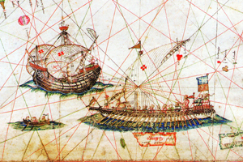
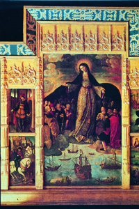

Lezione 10  Le Scoperte Geografiche
Le Scoperte Geografiche

BUONA SPERANZA
Il portoghese Bartolomeo Diaz doppia il Capo di Buona Speranza nel 1487, aprendo così al Portogallo la via delle Indie.
ROTTE PORTOGHESI
La galea con il suo equipaggio di rematori è molto più lenta e ingombrante della veloce e leggera caravella: in questo dettaglio da un portolano del cartografo quattrocentesco Grazioso Benincasa possiamo vedere le due imbarcazioni a confronto.
GIBILTERRA
Nella Spagna cattolica e coloniale i marinai e gli esploratori che si avventuravano negli oceani, oltre le colonne d’Ercole dello stretto di Gibilterra, venivano posti sotto la protezione della Vergine. In questo dipinto del quarto decennio del Cinquecento, conservato all’Alcazar di Siviglia, il pittore Alejo Fernandez celebra l’impresa di Cristoforo Colombo ponendo sotto il manto protettivo di Maria anche i nativi delle Americhe da poco scoperte.